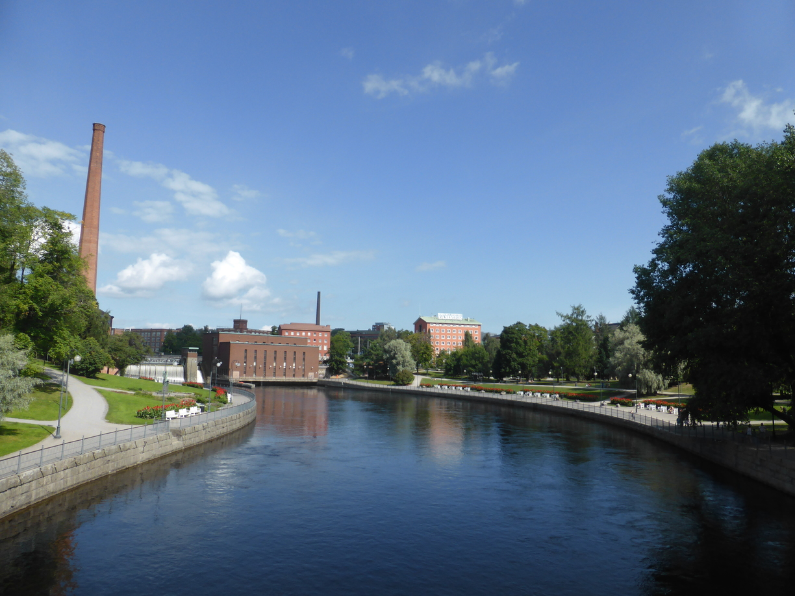
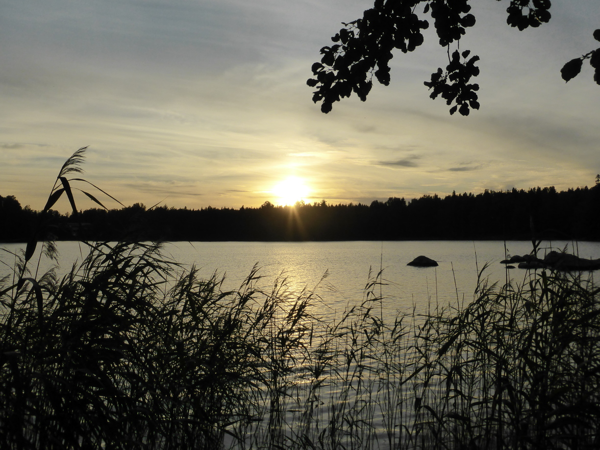
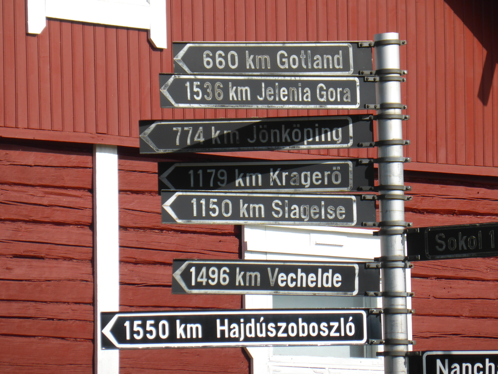
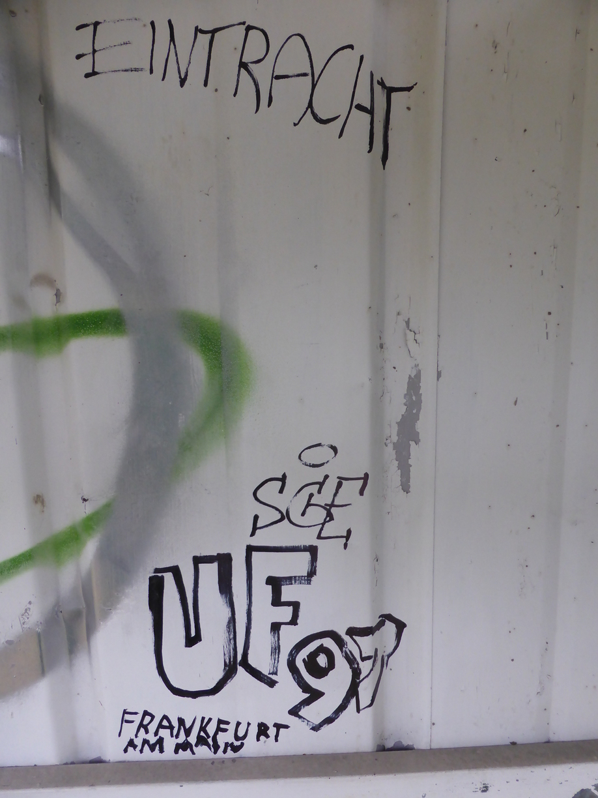
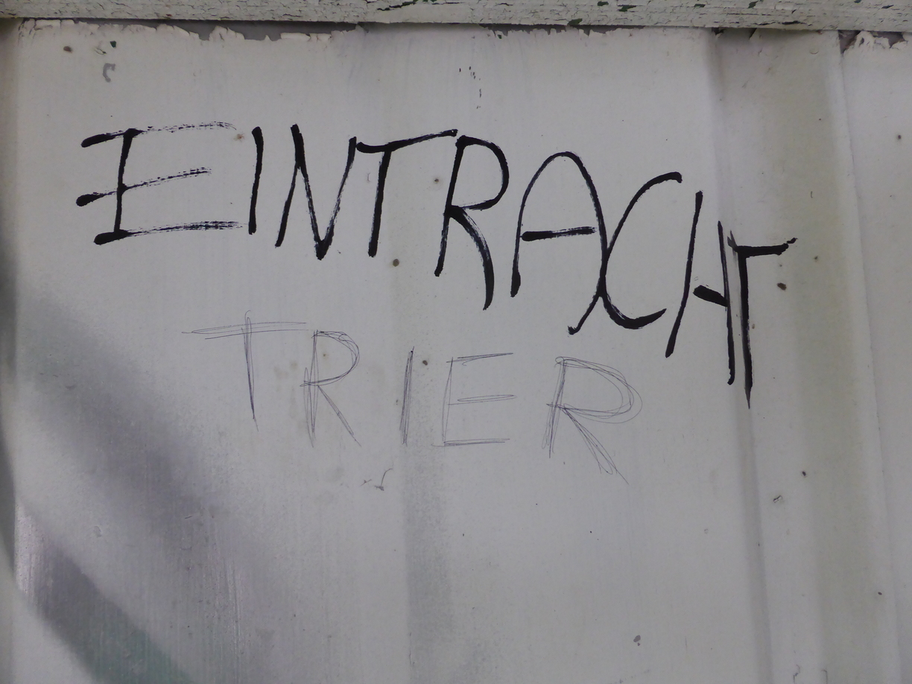
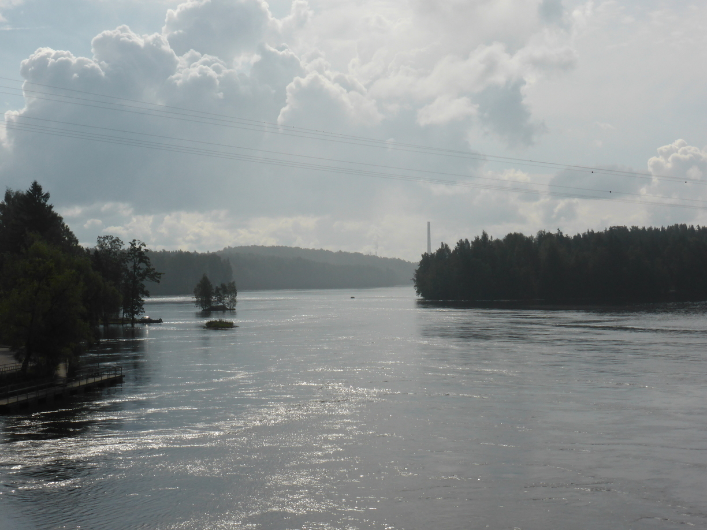
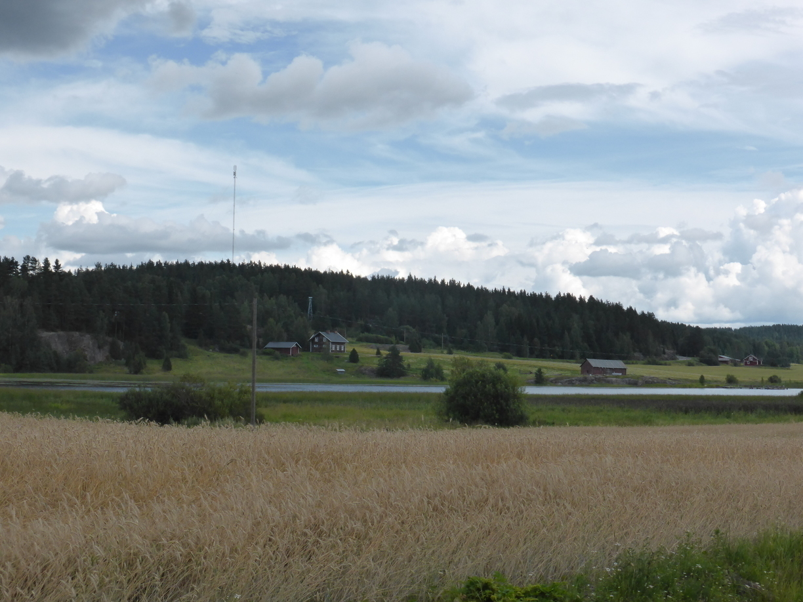
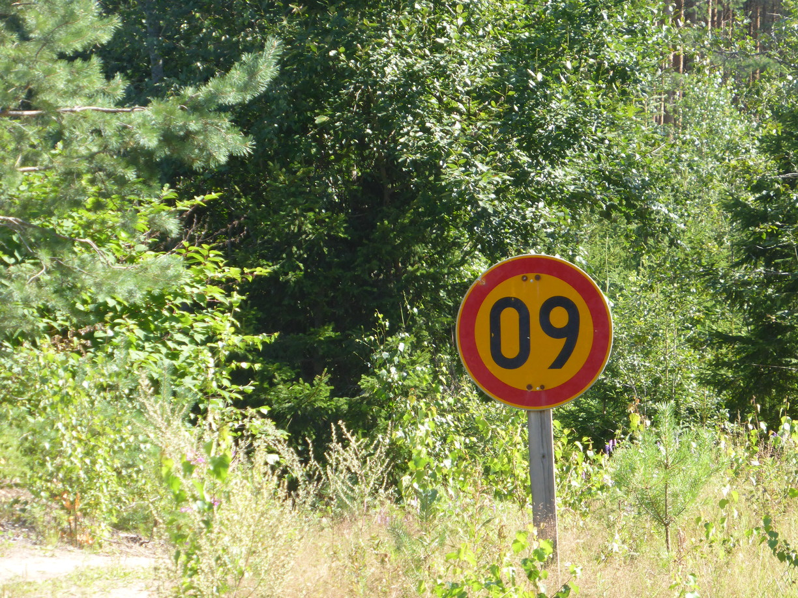

Heute hier, Morgen dort Posted on July 31, 2016
Tag 61
Ylöjärvi - Valkeakoski 85 km
Bei wunderschönen Wetter ging es dann weiter. Zunächst wieder durch Tampere. Diesmal hatte ich sogar die Kamera vorbei.   Auch der Campingplatz war ganz nett. Nur war der Boden ziemlich hart, so dass ich mir zum ersten Mal tatsächlich bei den Nachbarn einen Hammer leihen musste.
Tag 62
Valkeakoski - Riihimäki 108 km
Am nächsten Tag habe ich dann in Valkeakoski dieses Schild gesehen.  774 Kilometer nach Jönköping?! Warum hab ich dann über 3000 gebraucht?
Später hatte ich dann meinen ersten Platten. Schnell einen neuen Schlauch rein und weiter. Gerade als ich fertig war fing es dann an zu regnen. Nur der Regen war bei den Temperaturen angenehm und nich zu kräftig.
Trotzdem habe ich mir für eine Pause ein Bushaltestellenhäuschen ausgesucht. Beim Blick auf die Schmiererein staunte ich nicht Schlecht.  Nachdem ich das erste Photo gemacht hatte drehte ich mich nur kurz um und schon hatte ein Schmierfink wieder etwas hinzugefügt. 
Tag 63
Riihimäki - Heinola 108 km
Auf dem Supermarktparkplatz
Wo entspannen sich finnische Bergleute?
Auf dem Campingplatz in Heinola habe ich zwei Motorradfahrer kennen gelernt. Heiko kam aus Köln, hatte aber leider kein Kölsch dabei. Dafür gab er mir 2 Pakete Tortellini, die er selber nicht brauchte, da er nur Suppe löffelte. Pascal kam aus der nähe von Amsterdam und hatte Sushi und Rum dabei. Wir saßen nett beim Essen zusammen und unterhielten uns teils auf Deutsch, weil Heiko sich so besser ausdrücken konnte,und teils auf Englisch, weil Pascal da geübter drin war. Heiko verabschiedete sich irgentwann, da er früh weiter wollte. Pascal und Ich redeten noch lang über vergangene Reisen und zurkünftige Reisepläne. Pascal hatte seine Wäsche zuvor im Wäscheraum gewaschen. Jetzt war die Wäsche fertig, der Raum abgeschlossen und die Rezeption geschlossen. Also versuchte er noch vergeblich sich mit dem Taschenmesser Zutritt zu verschaffen. Kurz darauf beschloss ich, dass ich besser auch schlafen gehen würde. Es war immerhin schon halb zwei.
Tag 64
Heinola - Tuohikotti 109 km
Am nächsten Morgen war ich angesichts des Rums vom Vorabend überaschend früh auf den Beinen und auch sonst ganz frisch. Heiko war natürlich schon längst weiter gefahren. Auf meinem Fahrrad fand ich eine Capri-Sonne sowie eine Bifi. Ich vermute Heiko war der edle Spender.
 
Tag 65
Tuohikotti - Lappeenranta 60 km
 Heute ging es nach Lappeenranta. Ich bin bereits Mittags am Campingplatz angekommen. Aber noch näher an der Grenze gab es laut meinem Navi kein Camping. Also habe ich die Zeit genutzt um den Blog mal wieder zu aktualisieren.